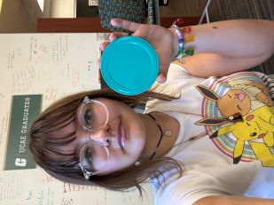

This is my pictures page. On this page, I will explore image sizes and formats.
Image Manipulation With A Picture From Pexels
This picture was taken by Ana Lourenco and sourced from Pexels. Ana Lourenco is a digital designer from Madrid, Spain. I chose this picture to match the donut theme on some of my other pages. This picture is 1.38 MB and 4752 x 3168 pixels.
The image at around 10% of its original size, downsized with CSS.
Downsizing With Editor
The image at around 10% of its original size, downsized in an editor.
Improper Proportions
The image at around 10% of its original size, downsized in an editor, with the height 33% smaller.The image at around 10% of its original size, downsized in an editor, with the width 33% smaller.
Improper Enlarging With CSS
The image at 475x317 pixels.The image sized down 25% and scaled back up to 475x317 pixels.
Image Manipulation With My Own Picture
This is a picture of my face next to a perfectly circular jar lid. It was taken at the UCAE on October 27th at 12:07 P.M.
The image at around 10% of its original size, downsized with CSS.
Downsizing With Editor

The image at around 10% of its original size, downsized in an editor.
Improper Proportions
The image at around 10% of its original size, downsized in an editor, with the height 33% smaller.The image at around 10% of its original size, downsized in an editor, with the width 33% smaller.
Improper Enlarging With CSS
The image at 475x317 pixels.The image sized down 25% and scaled back up to 475x317 pixels.